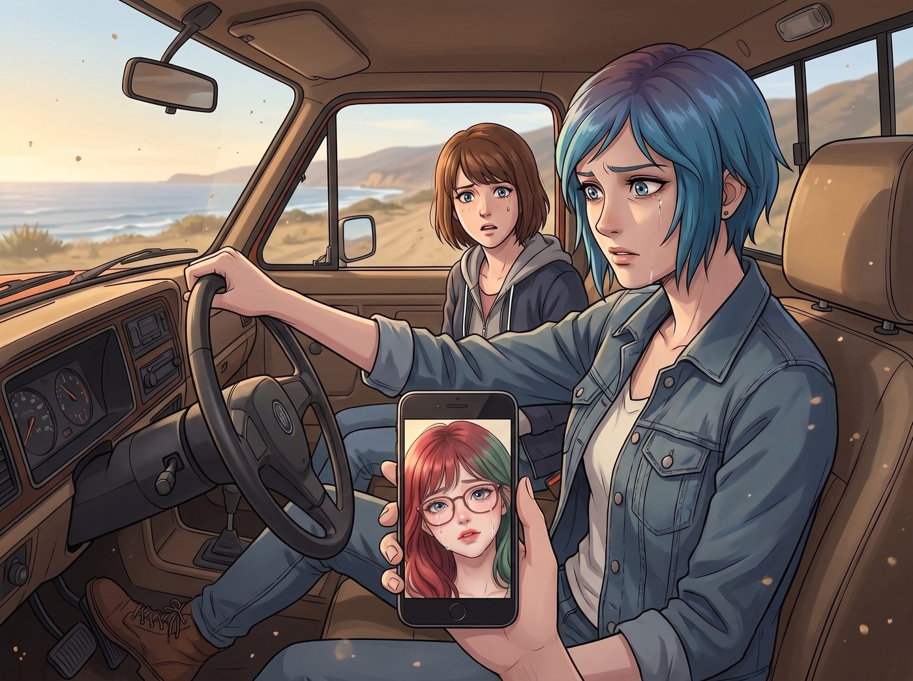

辦過葬禮的人

「早安，Max 學姐，Chloe 學姐。根據您們上傳的電子收據，本次加州行程的資金消耗率已經達到了百分之八十七。我強烈建議您們在接下來的返程中，將餐飲標準降級為快餐連鎖店的基礎套餐……」
清晨的陽光透過猛禽皮卡的擋風玻璃照進來。視訊通話的畫面裡，Lily 依然穿著那件一塵不染的米色針織衫，語氣也一如既往地充滿了精確的行政感。
但她穿幫了。
她那雙總是藏在圓框眼鏡後、深不見底的眼睛，此刻腫得像兩顆水蜜桃。儘管她刻意用冷水敷過，甚至可能還借了 Victoria 的高級遮瑕膏，但在 Max 這個對光影和細節極度敏感的攝影師眼裡，這無異於在黑夜裡打了一盞探照燈。
Max 剛咬了一口的甜甜圈停在半空中，眉頭立刻皺了起來：「Lily，妳哭了？發生什麼事了？Victoria 欺負妳了？」
螢幕那頭的 Lily 停頓了一秒，推了推眼鏡，試圖用黑魔法的術語來掩飾：
「沒有任何人對我實施物理或精神霸凌，學姐。我只是在昨晚，針對我的原生家庭系統，執行了一次深度的心理哀悼協議。這是一個正常的排錯過程，目前已經清理完畢。」
一、路肩
坐在駕駛座上的 Chloe，猛地踩了一腳煞車，把皮卡停在了一號公路的路肩上。
她一把從 Max 手裡拿過手機，盯著螢幕裡那個強裝鎮定的行政女孩。Chloe 臉上那種玩世不恭和狂野瞬間消失了，取而代之的，是一種極度深沉的複雜神情。
二號車廂裡的每個人都受過傷。Victoria 被家族的期望壓迫，Kate 被流言和信仰的重量反噬。但在這個車廂裡，只有 Chloe 真正站在一座墓碑前，辦過一場葬禮。
即使在這條 Max 奇蹟般保住了小鎮、也保住了她的時間線裡，Chloe 放下了叛逆，跟 Joyce 和 David 和解了，她依然永遠地失去了她的親生父親 William。她知道什麼叫真正的死別。
「妳給他們辦了葬禮，對嗎？」Chloe 的聲音出奇地低沉，沒有一絲一毫的玩笑意味。
螢幕裡的 Lily 愣住了。她看著 Chloe，原本偽裝出來的平靜外殼出現了一絲裂縫。她輕輕點了點頭。
「是的，Chloe 學姐。我確認了，那個小時候帶我去吃冰淇淋的父親和母親，已經不在了。現在用資源和道德綁著我的，只是……別的東西。我把那個小時候的他們，埋葬了。」
二、俱樂部
Chloe 沉默了很久。她從口袋裡摸出一根沒有點燃的菸，叼在嘴裡，看著窗外翻滾的太平洋海浪。
「歡迎來到辦過葬禮的人俱樂部，實習生。」
她轉過頭，重新看向手機螢幕，那雙藍色的眼睛裡透著一種穿越了風暴的堅韌。
「我爸當年開著那輛車出門，被一輛卡車撞了。那是一場物理上的車禍，他沒得選。我在墳墓前哭得撕心裂肺，但我知道他愛我，他只是回不來了。」
「後來，Max 從西雅圖回到了阿卡迪亞灣。就那麼一個星期，她把我從那個爛泥坑裡拉了出來。我們一起扛過了那場龍捲風。我終於學會了怎麼對著一塊冷冰冰的墓碑說再見，怎麼帶著我爸的那份愛繼續活下去。」
Chloe 伸出帶著厚繭的手指，輕輕敲了敲螢幕上 Lily 的臉。
「但妳這場葬禮，比我那場難辦。妳的車禍是發生在心裡的。妳的父母沒有被卡車撞，他們還活著，還會給妳發訊息，還會用錢砸妳。但妳心裡清楚，那個會無條件愛妳的人，已經不在了。」
Lily 呆呆地看著螢幕裡的 Chloe。
那些精確的心理學名詞、那些用來武裝自己的行政黑魔法，在 Chloe 這種用眼淚砸出來的街頭哲學面前，顯得如此蒼白。但同時，她也感受到了一種前所未有的、被徹底接納的溫暖。
「對著活人辦葬禮，比對著墓碑辦葬禮難多了，因為妳連個獻花的地方都沒有。」Chloe 叼著菸，嘴角勾起一抹帶著痞氣、卻無比溫柔的笑容，「但妳做得對，Lily。」
三、讓它空著
「可是，Chloe 學姐……」Lily 的聲音微微發抖，眼眶再次紅了，「那種感覺很空。我把他們剝離之後，我的系統裡出現了一個巨大的資產黑洞。我不知道該怎麼填補這種純粹的悲傷。」
「那就讓它空著。」
一直沒說話的 Max 湊了過來，把下巴擱在 Chloe 的肩膀上，對著螢幕裡的 Lily 露出了一個溫暖的笑容。
「悲傷不需要被填補，Lily。就像 Chloe 到現在還是會想她爸爸一樣，妳也可以一直懷念小時候那支冰淇淋。我們不需要把每個漏洞都修好。」
Chloe 大笑著攬住 Max 的肩膀，對著麥克風大聲宣布：
「聽到了嗎，小書呆子？把眼淚擦乾。等我們把這輛破皮卡開回普吉特海灣，老娘親自去給妳買西雅圖最大的冰淇淋。在二號車廂這家流浪漢股份有限公司裡，妳可是我們最寶貴的合夥人。」
四、上調百分之十五
螢幕那頭，Lily 摘下圓框眼鏡，用袖子用力擦了擦眼睛。
當她再次戴上眼鏡時，那些深不見底的悲傷雖然還在，但已經不再令人窒息。她推了推鏡框，嘴角揚起了一個無比真誠、甚至帶著一絲黑魔法師專屬狡黠的微笑。
「我明白了，Chloe 學姐。為了回報您們提供的高級心理諮詢服務，我決定把您們本次行程剩餘的餐飲預算，上調百分之十五。去吃頓好的吧，帳我會幫您們做平的。」
「萬歲！實習生萬歲！」
Chloe 狂按著皮卡的喇叭，在太平洋的海岸線上，發出了一陣囂張的狼嚎。